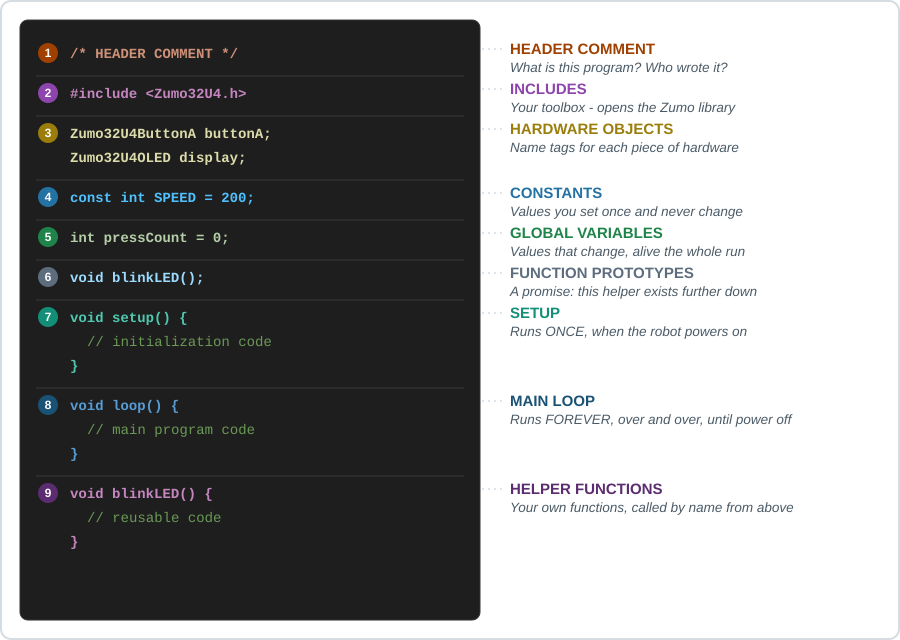
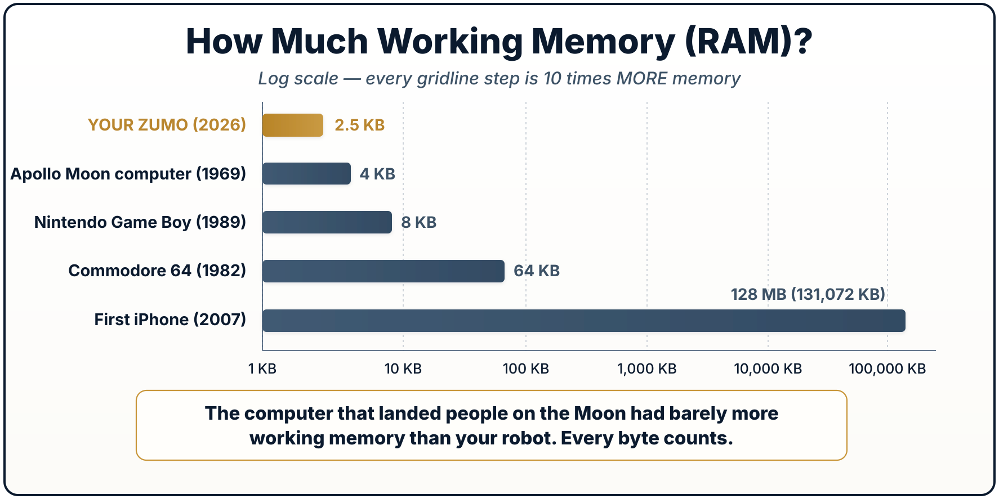
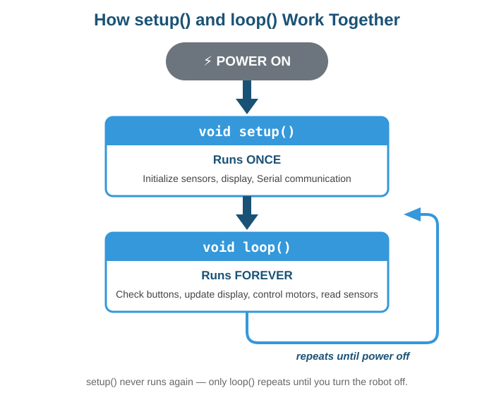
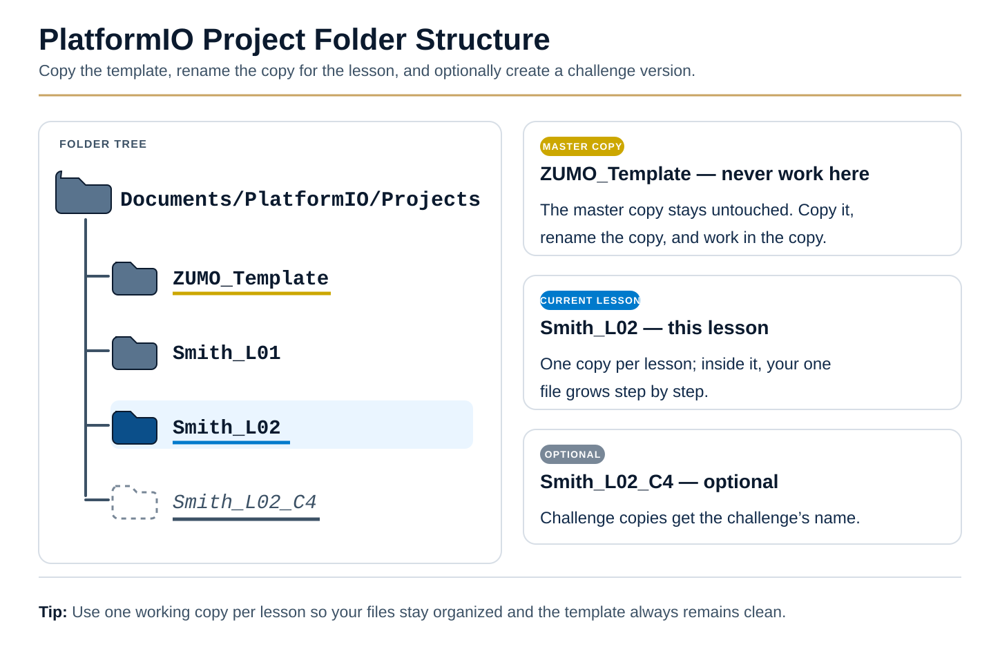
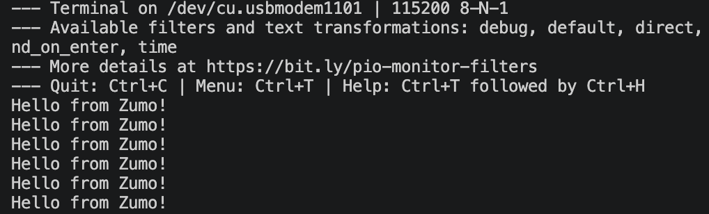
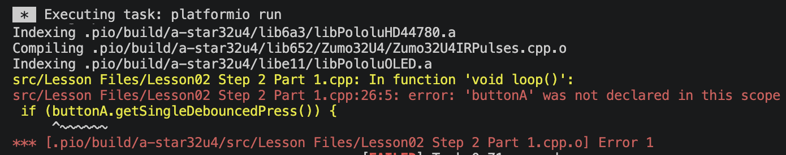
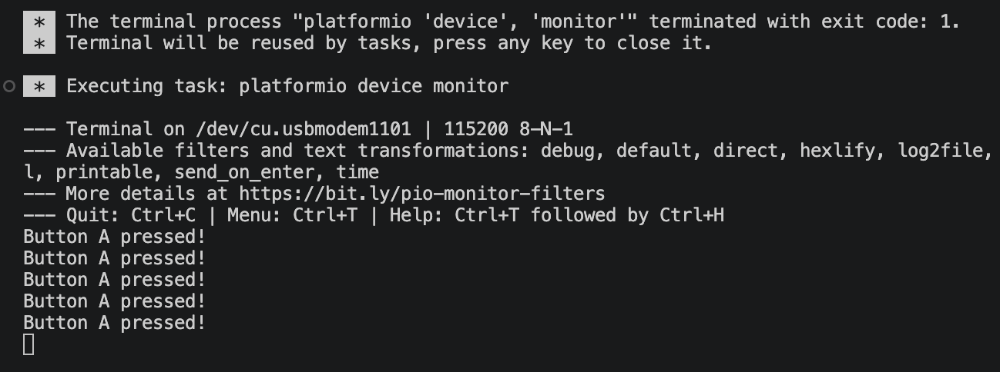
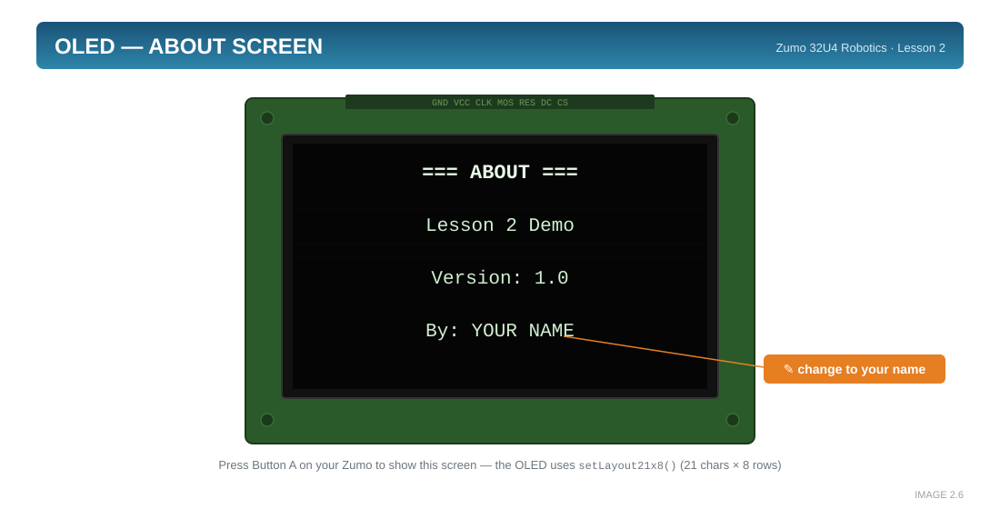
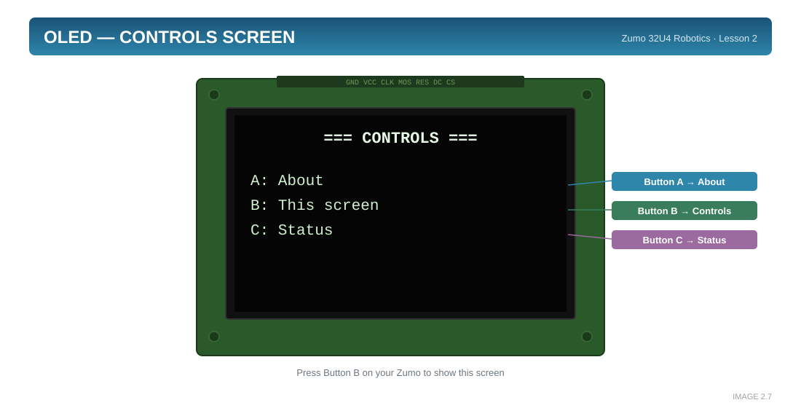
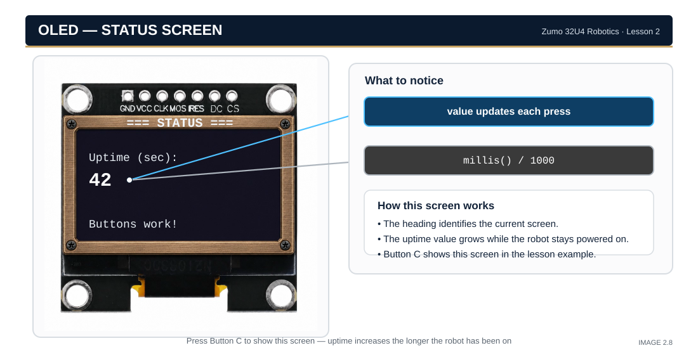

Every Arduino program you write will have the same basic structure. Think of it like a recipe — ingredients at the top, instructions in the middle, and techniques at the end.
🍽️ The recipe, written out
Here is a real recipe for a real thing your robot can do — blink the yellow LED twice when you press button A — written the way a cookbook would write it. Every part has a home in the program.
| Recipe part |
In the program |
Title card
“Double Blink — serves 1 robot” |
The header comment — what this makes, who wrote it, when |
Equipment
“You will need a mixing bowl” |
The #include — go get the toolbox before you start |
Ingredients
“1 button, 1 yellow LED” |
The hardware objects — named, laid out, before you cook |
Measurements
“Bake at 350° for 10 min” |
The constants — the numbers, named once so you can adjust the whole dish in one place |
Prep, done once
“Preheat the oven” |
setup() — runs one time, before anything else |
Method
“Stir until smooth. Repeat.” |
loop() — the steps that run over and over |
Techniques
“To fold: cut down, turn the bowl…” |
Helper functions — a move explained once at the back, referred to by name in the method |
Read the method of a good recipe and you will notice it never re-explains a technique mid-step. It says “fold in the egg whites” and trusts the technique section. That is exactly what blinkLED(); is doing inside loop() — naming a move that is spelled out further down. A program you can read like a recipe is a program you wrote well.
📘 NOTE
Same Idea, Different Words
Throughout this lesson (and in programming generally), you'll hear terms like "program flow," "execution," "running code," and "the code runs top to bottom."
These all mean the same thing: the order in which the robot follows your instructions, one line at a time. Don't let the different words confuse you — they're all describing how your program moves through the code.
🔍 INSIGHT: Execution Jumps
Code generally runs top to bottom, but when you call a function, execution "jumps" to that function, runs it, then jumps back to where it left off.
Think of it like reading a book with footnotes — you read along, hit a footnote marker, jump to the bottom of the page to read it, then return to where you were.
3.1 The Seven Sections
Keep this diagram visible while you code. Every program has these sections in this order:

[GRAPHIC 2.5] The Sketch Anatomy — the seven numbered sections plus the unnumbered Function Prototypes row (File: L02_GRAPHIC_2-05_sketch_anatomy.svg)
Color Key:
■ Header |
■ Include |
■ Objects |
■ Constants |
□ Prototypes (unnumbered) |
■ setup() |
■ loop() |
■ Helpers
💡 TIP
Print this diagram! Keep it next to your computer while you code. When you're not sure where to put something, check the diagram.
⬇ Download the Sketch Anatomy diagram (SVG)
⬇ Notebook card (PNG)
📓 For your engineering notebook
The PNG is sized to drop straight into a notebook — print it and tape it inside the front cover of a paper notebook, or paste it into a digital one. Unlike the diagram above, it is a picture, so it goes anywhere an image goes. Your notebook is your TDP, and a reference card in the front of it is worth more than the same diagram in a browser tab you have closed.
🔍 INSIGHT — That Unnumbered Row, in 10 Seconds
The gray Function Prototypes row earns its place with one line. Call a helper that is defined below loop(), and the build fails:
void loop() {
sayHello(); // ERROR: 'sayHello' was not declared in this scope
}
// The definition sits BELOW loop() - the compiler hasn't met it yet
void sayHello() {
Serial.println(F("Hello!"));
}The fix is a prototype — a one-line promise, up in that unnumbered row, that the full definition exists further down:
void sayHello(); // The prototype - a one-line promise, up top
void loop() {
sayHello(); // Now this compiles - the name was declared first
}That is the whole trick. You will build with prototypes later in this lesson — this is just the handshake.
🎯 TRY IT — Three Builds That Fail (3 min)
You have now seen one scope error and its fix. Here are three more programs that will not build. Do not type them in. For each one, read it and answer two questions on paper: which line does the compiler stop on, and what does it need?
Build 1:
void setup() {}
void loop() {
flashTwice();
}
void flashTwice() {
ledYellow(1); delay(100); ledYellow(0);
ledYellow(1); delay(100); ledYellow(0);
}
Build 2:
void beep();
void setup() {}
void loop() {
beep();
}
Build 3:
void showCount();
void setup() {}
void loop() {
showCount(5);
}
void showCount(int n) {
display.print(n);
}
🔓 Answers — click after you have written all three down
Build 1 — the one you already know. Stops at flashTwice(); inside loop(): 'flashTwice' was not declared in this scope. The definition is below loop() and the compiler has not met it yet. Fix: a prototype up in the unnumbered row.
Build 2 — this one is different, and it is the trap. The prototype is there, so the compiler is satisfied and reports nothing. The error arrives later and from a different program: undefined reference to 'beep()'. That is the linker talking. You promised a function existed and never wrote it. A prototype is a promise, not a definition — and something eventually checks.
Build 3 — the prototype and the function disagree. The prototype promises showCount() takes nothing; the definition takes an int. C++ treats those as two different functions, so the call matches the definition but the promise never gets kept: another undefined reference. Fix: the prototype must match the definition exactly — void showCount(int n);. Copy the first line of the function and add a semicolon; do not retype it from memory.
The lesson underneath all three: “not declared in this scope” and “undefined reference” are thrown by two different programs at two different times. Knowing which one is complaining tells you whether you forgot to announce a function or forgot to write it.
🔑 Curly Braces { }
— Define the start and end of a
code block. Every opening brace
{ MUST have a matching closing brace
}. Mismatched braces are one of the most common errors!
📖 LEARN — Where the Brace Goes, and the One-Liner Trap
Look at any two C++ programs written by different people and you will notice something petty and universal: they disagree about where the opening brace belongs. There are two answers, both correct, and the argument between them is older than you are.
K&R style puts the opening brace on the same line as the thing it opens. It is named for Kernighan and Ritchie, who wrote the original C book, and it is what the Linux kernel, Google's style guide, and Arduino all use:
void setup() {
ledYellow(1);
}
Allman style drops the brace to its own line, lined up underneath:
void setup()
{
ledYellow(1);
}
Allman makes the pairing easy to see — the two braces sit in the same column, so a missing one is obvious at a glance. K&R costs one fewer line per block, which on a laptop screen means more of your program visible at once. Neither compiles differently. The compiler does not care and never will; whitespace is invisible to it.
What matters is that you do not mix them. A file that switches styles halfway through is harder to read than a file in either style, because your eye stops being able to predict where to look. This book uses K&R everywhere — every program you download from the Project Maker is written that way. Match it, and your code will look like the book's code.
Professionals stop arguing about this by handing the decision to a tool. Formatters like clang-format restyle a whole file on save, so the question never reaches a code review. You do not need one yet — but that is where the argument goes to die.
⚠️ WARNING
the one-liner trap
C++ lets you skip the braces entirely when a block holds exactly one statement:
if (killSwitchPressed()) break; // legal, and used in this book
That is a guard clause — a short test with a short consequence, all on one line, and it is genuinely easier to read braced-up than not. You will meet this exact line in Lesson 10.
The trap is what happens next. Suppose you come back and want the robot to also stop the motors. The obvious edit looks right:
if (killSwitchPressed())
motors.setSpeeds(0, 0);
break; // ← NOT part of the if!
The indentation says both lines belong to the if. The compiler disagrees. Without braces, an if owns exactly one statement — the first one. The break; now runs every single time through the loop, kill switch or not, and your robot stops immediately for no visible reason.
And here is why this one is nastier than the mistakes in section 3.6: it compiles clean. No error, no warning, no red squiggle. The build succeeds and the robot misbehaves, which means you will go looking for the bug in your logic instead of in your punctuation. This exact mistake — two statements where the compiler saw one — caused a real security hole in Apple's software in 2014 that went unnoticed for over a year.
The book's rule: braces are the default. Leave them off only when the entire statement fits on the same line as the if. The moment you want a second line, add the braces first — before you type it.
3.2 Data Types: What Kind of Value?
Before we go further, one idea that quietly runs under everything: every variable has a data type that tells the robot what kind of value it holds. Pick the wrong type and your number gets silently chopped or your math goes sideways. Here are the five you will meet in this book.
</> The five data types you'll meet
A data type tells the robot what kind of value a variable holds. These five cover everything in this book.
int — a whole number, no decimal — int speed = 150;
bool — true or false, a yes/no switch — bool isDone = false;
float — a number with a decimal — float kp = 0.5;
long — a very big whole number — long timer = 60000;
char — a single character, like 'A' — char grade = 'B';
You will write almost everything in this lesson with int, and you will use bool too, so those two are worth a closer look now. The other three you will meet where they matter: long shows up in Lesson 5 for timing, float appears once you start doing math with decimals, and char is here for completeness — this book rarely needs it.
int — the workhorse
An int holds a whole number: 150, 0, -42. No fractions. This is the type you reach for by default — motor speeds, counts, pin numbers, loop counters are all whole numbers, so they are all ints.
The catch is the one you already saw in the warning above: an int cannot hold a decimal. If you try to put 2.5 into an int, the robot does not round — it chops off everything after the decimal point and keeps 2. That is not an error, so nothing warns you; you just get the wrong number. When you need the fraction, that is what float is for (Lesson 7).
bool — the yes/no switch
A bool (short for Boolean, named after mathematician George Boole) holds exactly one of two values: true or false. Nothing else. Think of it as a light switch — on or off, with no in-between.
That makes bool perfect for questions the robot answers yes or no: is the button pressed? have we finished the turn? is the battery low? You will lean on bool heavily once the robot starts making decisions — a variable like bool foundLine = true; is the robot remembering the answer to a yes/no question so it can act on it later.
3.3 Making a Choice: the if Statement
A bool holds the answer to a yes/no question. That raises an obvious next question: what does something about the answer? That job belongs to the if statement, and you have already run one — it was in the very first warm-up of this lesson, deciding whether to light the LED.
Every program you have written so far has been a straight road: line 1, then line 2, then line 3, every time, no exceptions. An if statement puts a fork in that road:
if (buttonC.isPressed()) { // the yes/no question
ledYellow(1); // runs only when the answer is YES
} else {
ledYellow(0); // runs only when the answer is NO
}
Read it out loud and it says what it does: if button C is being pressed, turn the LED on; otherwise, turn it off. Three parts carry it:
- The condition in parentheses — a question with a yes/no answer. Exactly the
bool idea from 3.2, asked at the moment it matters instead of stored in a variable.
- The braces — the lines that run when the answer is yes. Same code block from 3.1; nothing new.
else — optional. Leave it off and a “no” simply skips the block and carries on underneath. Include it and you have named a plan for both answers.
That is genuinely all of it for now, and it is enough to read every program in this lesson. What it is not yet is enough to write your own from a blank line — that is Lesson 3, where you will turn a sentence like “if the battery is low, warn me” into working code and meet the one-character typo that breaks it silently. Lesson 4 then takes the if apart properly, wires it to the sensors, and shows you why every robot behavior you will ever build is made of these.
💡 TIP
When you read someone else's if statement — including your own from last week — put the question in plain English first, out loud, before you look at what is inside the braces. Programmers who skip that step end up debugging the wrong half of the statement.
3.4 Asking More Than One Question: &&, || and !
The if statement you just met asks one question. Robots rarely get to ask one. Is the button pressed and is the battery good? Is the left sensor dark or the right one? Have we not found the line yet? Three small operators do that joining, and every one of them reads exactly like the English word it replaces.
| Operator | Say it as | The whole thing is true when… |
&& | and | both sides are true. One false and the whole thing is false. |
|| | or | either side is true. Both false is the only way to fail. |
! | not | the one thing after it is false. It flips the answer over. |
&& is two ampersands, and || is two pipe characters — the key above Enter on most keyboards, shift-backslash. Writing one instead of two is a different operator entirely and will not do what you want.
Both must be true — &&. A range check is the everyday case: is this number inside a window?
if (count > 0 && count < 10) {
// runs only for 1 through 9 — BOTH questions answered yes
}
⚠️ WARNING
each side must be a whole question
English lets you say “if count is above 0 and below 10.” C++ does not. if (count > 0 && < 10) is an error, because < 10 on its own is not a question — below what? Say the variable again on the right-hand side: count > 0 && count < 10. The good news is that this one is loud: the compiler stops and points at the line, unlike the = trap waiting for you in Lesson 3.
Either will do — ||. Same shape, lower bar:
if (buttonB.isPressed() || buttonC.isPressed()) {
// runs if EITHER button is down — or both
}
Note that “or” in code is more generous than “or” in conversation. When someone offers you tea or coffee they mean one of them; || is perfectly happy with both.
Flip the answer — !. Put it in front of a yes/no value and it reverses it. Remember the bool foundLine from 3.2:
if (!foundLine) {
// runs when foundLine is FALSE — "if we have NOT found the line"
}
That single character is easy to miss when reading quickly, and it inverts the entire meaning of the line. When a condition behaves backwards, look for a ! you did not notice before you go looking for anything cleverer.
📖 LEARN — C++ Stops Reading Once It Knows the Answer
There is one more thing about && and || that looks like trivia and is not. C++ reads a condition left to right, and quits the moment the answer is settled. Programmers call this short-circuit evaluation.
Think about what && needs: both sides true. So if the left side comes back false, the whole thing is already false — and whatever is on the right is never looked at:
if (batteryOK() && startRun()) {
// If batteryOK() is false, startRun() NEVER RUNS.
// The robot does not start. No error. It just doesn't happen.
}
And || needs only one side true, so a true on the left settles it and the right side is skipped:
if (buttonA.isPressed() || buttonB.isPressed()) {
// If A is down, B is never even checked.
}
This cuts both ways, and you need to know both.
It is a tool. Put the cheap or protective question first and the expensive or risky one second, and the second is protected by the first. Reading a sensor takes real time; checking a variable takes almost none. if (sensorEnabled && readSensor() > 500) never reads the sensor when it is switched off. That ordering is deliberate, and you will see it throughout the later lessons.
It is a trap. If the right-hand side does something — moves a motor, advances a counter, updates the screen — then that something silently stops happening whenever the left side decides the question early. The bug looks impossible: the line is right there, it clearly runs, and yet the counter never moves.
The habit that avoids all of it: keep conditions as pure questions. A condition should ask, not act. If a line needs to happen, put it inside the braces where you can see it — not hidden on the right-hand side of an &&, where whether it runs at all depends on something else entirely.
💡 TIP
read the whole condition aloud as one sentence
“If count is greater than zero and count is less than ten.” If the sentence does not make sense out loud, the code will not make sense to the robot either. This is the fastest bug-finder you will ever own, it costs nothing, and it works on somebody else's code too. You will need && in this lesson's challenges — more than one of them wants two buttons held at the same time.
3.5 The Two-Week Rule
Write code as if the next person to read it is a total stranger who knows nothing about what you were thinking.
(That stranger is you, two weeks from now, having forgotten everything.)
📖 LEARN — Why Professionals Obsess Over Readable Code
Here is a fact that surprises most new programmers: professional software engineers spend far more of their time reading code than writing it. Studies of real software teams consistently estimate that well over half of a professional’s hours go to reading, understanding, and maintaining code that already exists — not typing new lines. A line of code gets written once, but it gets read dozens or hundreds of times over its life: by teammates, by code reviewers, and by the original author months later, staring at their own work like a stranger wrote it.
That is why an intent-driven comment is worth real money in the real world. Compare these two versions of the same line:
// Version 1 — repeats what the code already says (useless):
const int MOTOR_SPEED = 200; // set speed to 200
// Version 2 — explains WHY the value was chosen (gold):
const int MOTOR_SPEED = 200; // Cap speed so turns stay controllable on tile floors
Version 2 answers the question a future reader will actually ask: “Can I change this number?” With Version 1, they have no idea. With Version 2, they know exactly what they are trading away if they raise it.
📘 NOTE
Comments Are for Future-You
When you write code, you understand it perfectly. Two weeks later? It might as well be written in ancient Egyptian.
Good comments answer:
- WHAT does this code do?
- WHY is it here? (This is the important one!)
Bad Comments vs. Good Comments
| ❌ Bad Comment |
✅ Good Comment |
delay(1000); // delay |
delay(1000); // Wait 1 second for sensor to stabilize |
x = 5; // set x to 5 |
x = 5; // Number of retries before giving up |
// do the thing |
// Spin to calibrate sensors |
The bad comments just repeat what the code says. The good comments explain why.
3.6 Common Pitfalls
These are the mistakes that trip up almost every beginner. Learn to recognize them now!
📖 LEARN — The Semicolon, and Why the Error Points at the Wrong Line
The missing semicolon is the first error nearly everyone meets, and it has one confusing habit worth understanding before it wastes your afternoon.
A semicolon ends a statement — one complete instruction. C++ ignores line breaks entirely; as far as the compiler is concerned your whole program could be a single enormous line. The semicolon is the only thing telling it where one instruction stops and the next begins.
So when you leave one out, the compiler does not notice at that line. It reads straight past the end of your line, still expecting the rest of the instruction, and only complains when it hits something that cannot possibly continue it — which is usually on the next line:
ledYellow(1) // ← the missing ; is HERE
delay(1000); // ← but the error points HERE
The rule that saves you:
when an error mentions a semicolon, look at the line
above the one the compiler names. Nine times out of ten that is where the problem sits.
Building the habit. Type the semicolon as part of the statement, not as a separate afterthought — the same way you type the closing parenthesis right after the opening one. Fingers learn this faster than brains do, which is also the argument for typing the code in this book out by hand instead of copy-pasting it. And do not fight the compiler on it: a missing semicolon stops the build instantly and for free, which makes it the cheapest error you will ever have. Your editor will underline it in red before you even hit Build.
Two places a semicolon does not go, both of which cause stranger problems than leaving one out. There is no semicolon after the closing brace of a function — void setup() { } is finished. And a stray semicolon right after an if condition — if (x > 5); — compiles perfectly and silently means "if x is greater than 5, do nothing at all," after which the braces below it run every time regardless. Same family as the one-liner trap from section 3.1: legal code, clean build, wrong robot.
| What You Typed |
Error Message |
What's Wrong |
Fix |
delay(1000) |
expected ';' before... |
Missing semicolon at end |
Add ; → delay(1000); |
void setup() {
// code |
expected '}' at end of input |
Missing closing brace |
Add } to close the function |
ButtonA.isPressed() |
'ButtonA' was not declared |
Wrong capitalization |
buttonA.isPressed() |
if buttonA.isPressed() |
expected '(' before... |
Missing parentheses around condition |
if (buttonA.isPressed()) |
Serial.println("Hello); |
missing terminating " character |
Missing closing quote |
Serial.println(F("Hello")); |
⚠️ WARNING
THE #1 ERROR YOU WILL MAKE: The Missing Semicolon
Every statement needs a semicolon. When one is missing, the compiler blends that line into the next one — and then complains about the wrong line. Here, the mistake is delay(100) — but watch where the error points:
delay(100) // ← line 8: THE ACTUAL MISTAKE (no semicolon)
ledYellow(1); // ← line 9: an innocent line
src/main.cpp:9:1: error: expected ';' before 'ledYellow'
ledYellow(1);
^~~~~~~~~
THE RULE: THE COMPILER POINTS AT THE LINE AFTER THE MISTAKE. ALWAYS LOOK UP ONE LINE.
Burn this in now — it will save you hundreds of confused minutes this semester.
💡 TIP
Pitfall 2: Mismatched Braces
Every { needs a }. One missing brace confuses the compiler so badly it often throws several errors at once — here, a } was forgotten before void loop():
src/main.cpp:4:13: error: a function-definition is not allowed here before '{' token
void loop() {
^
src/main.cpp:8:1: error: expected '}' at end of input
When you see an error avalanche, fix the FIRST error and rebuild — the rest usually vanish. Use VS Code’s bracket matching: click a brace and its partner lights up.
💡 TIP
Pitfall 3: Case Sensitivity
C++ treats buttonA, ButtonA, and BUTTONA as three completely different names. Get the capitalization wrong and the compiler claims the name doesn’t exist at all:
src/main.cpp:6:5: error: 'ButtonA' was not declared in this scope
if (ButtonA.isPressed()) {
^~~~~~~
"was not declared" often means "you spelled or capitalized it differently than where you created it." Check the capitalization before you check anything else.
💡 TIP
Read Error Messages Carefully
Error messages tell you what's wrong and what line to look at. The actual error is often on the line before the one mentioned — check for missing semicolons or braces!
↑ Back to top
You have seen the shape of a program in Section 3. This section walks the seven sections one at a time, in the order they appear in the file, and says what each one is actually for.
Header Comment
🔑 Header Comment
— A block of text at the very top of your file that describes what the program does, who wrote it, and when.
/*
=====================================================
LESSON 2 - Read Code Like a Pro
=====================================================
WHAT THIS PROGRAM DOES:
Press buttons A, B, C to see different info screens.
AUTHOR: Maria Santos
DATE: December 10, 2024
=====================================================
*/
Everything between /* and */ is ignored by the computer. It's for humans only.
⚠️ WARNING
Non-negotiable rule:
You must update the header comment for each new lesson you build or change. A header that describes last week’s program is worse than no header at all — it actively lies to the reader.
📖 LEARN — The Two Kinds of Comments
C++ gives you two different comment tools, and you will use both constantly:
Line comments start with // and run to the end of that one line only. Perfect for a short note next to a single statement.
Block comments open with /* and close with */ — the computer ignores everything in between, even across many lines. Perfect for header comments and multi-line explanations. One warning: block comments do NOT nest. The first */ the compiler meets ends the whole comment, so a /* inside a /* will break your build.
// A line comment: everything after the slashes, on this line only
/*
A block comment: everything between the markers,
no matter how many lines it covers.
*/
Pro habit: use /* */ for the header, // for everything else. It keeps your code scannable.
One more habit, and it is the one that separates a useful comment from a useless one: comment the why, not the what. The code already says what it does — anyone who can read C++ can see that delay(1473); waits 1,473 milliseconds. Writing // wait 1473 ms next to it adds nothing and now there are two things to keep in sync. What the code cannot tell you is why that number: // 1473ms = one full wheel rotation at SPEED 200, measured 11/14. That comment survives being useful for years, and it is the one you will thank yourself for.
Include Statement
🔑 #include
— Tells the computer to load a library (a collection of pre-written code). Like opening a toolbox before starting a project.
#include <Zumo32U4.h> // Load the Zumo robot library
Without this line, the computer won't know what Zumo32U4ButtonA or Zumo32U4Motors means.
Hardware Objects
🔑 Object
— A variable that represents a piece of hardware. You create it once at the top of your program, then use it everywhere.
// ===== HARDWARE OBJECTS =====
Zumo32U4ButtonA buttonA; // Left button
Zumo32U4ButtonB buttonB; // Center button
Zumo32U4ButtonC buttonC; // Right button
Zumo32U4OLED display; // OLED screen
Zumo32U4Motors motors; // Left and right motors
Notice the comments after each line? That's so you remember which button is which!
📖 LEARN — Why Objects, and Why at the Top?
An object is a named bundle: a little block of memory that tracks one piece of hardware, plus every command that works on it. Zumo32U4Motors motors; says: "build me a controller for the motor hardware, and let me call it motors." From then on, everything you say to the motors follows one pattern — name-dot-command: motors.setSpeeds(100, 100); means "hey, motor controller — do your thing."
Why declare them at the top, outside every function? Two reasons. First, every function in your file needs to reach the same hardware — setup(), loop(), and your helpers all talk to the same one display. Global scope makes that possible. Second, hardware never stops existing while the robot is on — so its object shouldn’t either (that is the SRAM lesson from the Constants section, one screen down). Declare each object once: two objects for the same motor would fight over it.
Only declare what you use — but here is the complete toolbox, so you never have to hunt for a name:
| Object Type |
Usual Name |
What It Controls |
You Meet It In |
Zumo32U4ButtonA / B / C |
buttonA, buttonB, buttonC |
The three pushbuttons |
Lessons 1–2 |
Zumo32U4OLED |
display |
The screen |
Lessons 1–2 |
Zumo32U4Buzzer |
buzzer |
The speaker (tones and songs) |
Lessons 1–2 |
Zumo32U4Motors |
motors |
Left and right drive motors |
Lesson 3 |
Zumo32U4LineSensors |
lineSensors |
The 5 downward line sensors |
Lesson 4 |
Zumo32U4ProximitySensors |
proxSensors |
The IR obstacle sensors |
Lesson 5 |
Zumo32U4Encoders |
encoders |
Wheel-rotation counters |
Lesson 6 |
Zumo32U4IMU |
imu |
Gyro + accelerometer + compass |
Later lessons |
Constants
🔑 Constant
— A value that doesn't change while the program runs. Constants ALWAYS use ALL_CAPS names so they stand out to the programmer — failure to do this makes constants much harder to find when you are programming.
// ===== CONSTANTS =====
const int MOTOR_SPEED = 200; // How fast the robot drives
const int BLINK_TIME = 100; // LED blink duration (milliseconds)
Why use constants? If you want to change the speed, you change it in ONE place instead of hunting through your entire program.
📖 LEARN — Constants: Killing the Magic Number
A bare number sitting in the middle of code — delay(1473); — is what programmers call a magic number: it clearly matters, but nothing says why, and it might be copy-pasted in five other places. Constants fix all three problems at once:
1. One place to change. Tune MOTOR_SPEED once at the top and every line that uses it updates itself.
2. The name documents the code. delay(BLINK_TIME); explains itself; delay(100); explains nothing.
3. The compiler guards it. The keyword const is a promise the compiler enforces: if any line later tries MOTOR_SPEED = 400;, the build fails on the spot instead of your robot silently going too fast. You just recruited the compiler as a safety inspector — for free.
What earns constant status? Any tuning value you might revisit (speeds, delays, thresholds) and any safety limit that must never drift. In competition code, your whole robot gets tuned by editing the constants block — nothing else.
📖 LEARN — Where Variables Actually Live: SRAM and the Stack
When you declare hardware objects and constants at the top of the file — outside of setup() and loop() — you give them global scope. The moment the robot powers on, the ATmega32U4 reserves a permanent spot for each one in its SRAM (Static Random-Access Memory — the chip’s fast working memory, and there is only about 2.5 KB of it). A global lives at that same address for the entire time the robot is powered. That is exactly what you want for hardware: the motors and the display never stop existing, so neither should the objects that represent them.
A variable declared inside a pair of braces — like int i = 0; inside a loop — is a local variable, and it lives a completely different life. It is created in a region of memory called the stack the instant execution enters the block, and the instant execution passes the closing brace }, the chip simply reuses that space. The variable is gone. No cleanup command needed — falling out of scope is the cleanup.

[GRAPHIC 2.8] How much working memory? Your Zumo vs. the machines of history (File: L02_GRAPHIC_2-08_memory_ladder.svg)
Why should you care? Two reasons. First, 2.5 KB is tiny — keeping short-lived values local keeps your memory footprint lean. Second, scope prevents name collisions: the i inside one function cannot interfere with an i inside another, because they are separate stack entries that never exist in the same place at the same time.
setup() Function
🔑 setup()
— Code inside this function runs exactly ONE time when the robot powers on. Use it for initialization.
void setup() {
Serial.begin(115200); // Start computer communication
display.clear(); // Clear the screen
display.print(F("Ready!")); // Show startup message
}
loop() Function
🔑 loop()
— Code inside this function runs FOREVER, repeating over and over until you turn off the robot.
void loop() {
// This code repeats hundreds of times per second!
if (buttonA.isPressed()) {
ledYellow(1); // Held down = LED on
} else {
ledYellow(0); // Released = LED off
}
}
⚠️ WARNING
Keep loop() Responsive
Avoid putting long delay() calls inside loop(). While the robot is waiting in a delay, it can't respond to buttons or sensors!
For example, delay(5000) (5 seconds) means your robot is "frozen" and ignoring everything for 5 whole seconds. In later lessons, you'll learn to use millis() for timing without freezing.
So where does long work go? For now: into a helper function that a button press triggers — exactly what this lesson’s program does. The robot is "busy" while the helper runs, but only because you asked it to be, and loop() goes right back to listening the moment it finishes. What you never want is the long wait sitting loose in loop(), freezing the robot on every single pass.
How setup() and loop() Work Together
This is one of the most important concepts in Arduino programming. Here's what happens when you power on your robot:

[GRAPHIC 2.4] How setup() and loop() work together (File: L02_GRAPHIC_2-04_setup_loop_timeline.svg)
📘 NOTE
Think of It Like a Morning Routine
setup() is like waking up: you do it once — brush teeth, get dressed, eat breakfast.
loop() is like your workday: check email, do tasks, check email again, do more tasks... it repeats until you "power off" (go to sleep).
Helper Functions
🔑 Function
— A reusable chunk of code with a name. Instead of copying the same code multiple times, you write it once and "call" it by name.
// ===== HELPER FUNCTIONS =====
// Blink the yellow LED once
void blinkLED() {
ledYellow(1); // Turn ON
delay(100); // Wait
ledYellow(0); // Turn OFF
}
Now anywhere in your code, you can just write blinkLED(); instead of those 3 lines.
📖 LEARN — How the Chip Keeps Its Place: the Program Counter and the Stack
Code runs top-to-bottom — until you call a function. So how does the chip find its way back? Inside the ATmega32U4 there is a special register called the Program Counter (PC): it holds the address of the machine-code instruction being executed right now. Normally it just ticks forward, one instruction after another.
The moment loop() reaches blinkLED();, three things happen in a split second. First, the chip pushes the return address — the location of the instruction right after the call — onto the stack (the same stack your local variables live on). Second, the Program Counter jumps to the first instruction of blinkLED() and runs the function top to bottom. Third, when execution reaches the function’s closing brace, the chip pops that saved address off the stack and loads it back into the Program Counter — and execution snaps back to the exact spot it left, as if it had never been away.
Here is the analogy to keep: reading a textbook, you hit an asterisk, jump down to the footnote at the bottom of the page, read it, and return to the exact sentence you left. Your finger holding the old spot on the page? That is the stack.
This is just the introduction — Section 8A takes functions apart piece by piece: return types, parameters, and when to write one.
↑ Back to top
📦 Fell behind? File wrecked? The Maker has your back.
The ZUMO Project Maker now has a DISCOVERIES menu for this lesson: pick the Discovery named for the thing you're about to build, and it opens a project already caught up to that exact point. Missed a day? Broke your file beyond repair? Grab the right Discovery and keep moving — no shame, no retyping.
📋 WHAT YOU NEED BEFORE STARTING
- VS Code with PlatformIO installed (from Lesson 1)
- Your Zumo robot connected via USB — into the same USB port as last time (switching ports can change the COM number and cause surprise upload errors)
- Robot power switch ON (slide it toward the tracks)
- The ZUMO_Template folder in Documents/PlatformIO (you built it at the end of Lesson 1 — or download below)
📝 DO THIS NOW — Start a New Lesson (the same ritual, every lesson)
- Open the ZUMO Project Maker → type your last name, confirm Lesson 02 — Main lesson build, click Download. The folder comes out named correctly with your header comment already filled in.
- Unzip the download and drag the folder into Documents/PlatformIO.
- In VS Code: File → Open Folder → pick your new folder. (Close the previous lesson’s folder first, so you can’t edit the wrong project.)
- Open
src/main.cpp — the Maker pre-filled your header comment (name, lesson, date). Keep the WHAT-THIS-DOES line updated as you build.
- Click Build (✓). SUCCESS means your copy is healthy before you write a single line.
🚀 Open the ZUMO Project Maker
No internet, or prefer manual? Copy your ZUMO_Template (built in Lesson 1) and rename it LastName_L02 by hand — same result.
⬇ Download ZUMO_Template (zip)
Unzip it into Documents/PlatformIO once. If yours ever breaks, just download it again.
💡 TIP
Folder Naming Rules
LastName_L##, zero-padded so folders sort in order (L02 before L10). Two students share a last name? Add a first initial: SmithJ_L02. Copy per lesson, never per step — inside a lesson, your one file grows step by step.
Challenge copies get the challenge’s name — e.g. Smith_L02_The_Broken_Code or Smith_L02_Blink_Count. Every challenge that needs its own folder tells you the exact name, and the Project Maker builds it for you. No folder mentioned? Work in your main LastName_L02 build.
⚠️ WARNING
iCloud caution:
if your Mac syncs Documents to iCloud, make sure the PlatformIO folder stays
downloaded on this Mac (right-click → keep downloaded). Cloud-offloaded files break builds.

[GRAPHIC 2.9] One copy per lesson — how your PlatformIO folder should look (File: L02_GRAPHIC_2-09_folder_structure.svg)
Ready? Your fresh copy is open and healthy — let's build this lesson's program.
You'll build this program in small steps. After each step, you'll test to make sure it works before moving on.
STEP 1: The Skeleton
What: Every Arduino program needs setup() and loop(). Without them, it won't compile. Your template copy already gives you this skeleton — open src/main.cpp and check that it contains these three pieces (your file also has the section banner comments):
#include <Zumo32U4.h>
void setup() {
}
void loop() {
}
✅ CHECKPOINT: Does It Compile?
- Click Build (the ✓ checkmark in the bottom toolbar)
- Wait for it to finish
👀 WHAT YOU SHOULD SEE
SUCCESS in the terminal at the bottom
🔧 If This Doesn't Work...
- Make sure you opened your project folder in VS Code (File → Open Folder) — with just a lone file open, the ✓ Build and → Upload icons never appear
- Check for typos — every character matters
- Make sure you have matching curly braces { }
- Make sure the file is named
main.cpp (not main.cpp.txt)
🎉 You just wrote a program that does... nothing! But it compiles. That's step 1.
STEP 2: Say Hello to Serial Monitor
What: Let's make the robot send a message to your computer.
🔑 Serial Monitor
— A window in VS Code that shows messages from your robot. Like a text conversation between you and the robot.
Find this code:
Change it to:
void setup() {
// Start communication with computer
// 115200 = the speed; the Serial Monitor must match it
Serial.begin(115200);
}
void loop() {
// Say hello once per second - impossible to miss
Serial.println(F("Hello from Zumo!"));
delay(1000); // Wait 1 second, then loop() runs again
}
📘 NOTE
Why print from loop() and not setup()?
Remember the Lesson 1 rule: uploading (or pressing reset) briefly drops the USB port, and the Serial Monitor only reconnects a moment later. A message printed once inside setup() fires at boot — before the monitor is listening — and vanishes unseen. Printing on repeat inside loop() means the message is there waiting whenever the monitor connects. (A one-second delay() is fine for this quick test — we replace this whole loop in the next step.)
📘 NOTE
What's 115200?
The number 115200 is the baud rate — a speed setting for serial links, measured in bits per second. On classic serial hardware, both sides must agree on this speed: if a board transmits at 115200 bits per second while the computer listens at 9600, the pulses fall out of alignment and the screen fills with garbage characters.
Here's the plot twist for YOUR robot: the Zumo's ATmega32U4 talks to your computer over native USB, and USB negotiates its own transfer speed automatically. On this robot, the number in Serial.begin() is accepted and then essentially ignored — your messages arrive intact either way. We use 115200 anyway because it is a professional habit: on UART-based boards like the Arduino Uno, matching baud rates is a real requirement, and you will meet hardware like that in your future.
📖 LEARN — How "Hello from Zumo!" Actually Reaches Your Screen
When Serial.println() runs, the chip does not send letters — it sends numbers. Each character is first translated to its ASCII code, the international character-to-number chart (H is 72, e is 101, and so on). Each number is then broken into bits — 1s and 0s — and shipped down the USB cable as a stream of electrical pulses. Your computer catches the stream, runs the translation in reverse, and draws the characters in the Serial Monitor. The whole trip takes less time than a single blink of the robot’s LED.
Older boards do this over a two-wire link called UART (Universal Asynchronous Receiver-Transmitter): a TX (transmit) wire carries pulses out, an RX (receive) wire carries pulses in, and both ends keep time using the agreed baud rate — that is where baud matching genuinely matters. The ATmega32U4 has UART hardware built in too (a second serial port called Serial1), but the Serial Monitor connection you are using right now rides the USB cable instead.
✅ CHECKPOINT: Test It
- Click Build (✓) — should say SUCCESS
- Click Upload (→ arrow) — sends code to robot
- Click Serial Monitor (🔌 plug icon)
👀 WHAT YOU SHOULD SEE
Hello from Zumo!
Hello from Zumo!
Hello from Zumo!
…one new line per second, for as long as the robot is plugged in.
(Plugged in is enough — USB powers the brain, LEDs, display, and Serial. Only the motors need the power switch, and today's program never touches them. Your robot does a lot without ever being turned "ON.")

[IMAGE 2.9] Serial Monitor showing the repeating hello (File: L02_IMAGE_2-09_serial_hello_from_zumo.png)
🔧 If This Doesn't Work...
- Close the Serial Monitor and reopen it — it may have attached to the old port from before the upload
- Try unplugging and replugging the USB cable
- Press the reset button on the robot
🎯 TRY IT — Step 2: Your Name (1 minute)
Change the message to say your name. Upload and verify it shows YOUR name in the Serial Monitor.
STEP 3: Detect a Button Press
What: Let's make the robot answer only when you press Button A — replace the whole hello loop with a button check.
🔍 INSIGHT — Plan it first (pseudo-code)
Before touching the code, write the change in plain English. Programmers call this pseudo-code — the plan, in your language, before the syntax:
setup() → no changes
loop() → 1. change the comment so it describes the NEW job:
"check if button A is pressed"
2. WHEN button A is pushed:
print "Button A pressed!"
3. no more delay — the button decides when
Two things to notice. The comment changed first — good programmers update the plan, then make the code match it. And exactly one line of the plan — "WHEN button A is pushed" — is the thing you don't yet know how to say in C++. That's the entire point of this step.
Find your hello-printing loop from Step 2:
void loop() {
// Say hello once per second - impossible to miss
Serial.println(F("Hello from Zumo!"));
delay(1000); // Wait 1 second, then loop() runs again
}
Now make the change — in this order:
- Update the comment first. Change it to
// Check if button A is pressed — the plan now lives in the file, and the old code no longer matches it. Your job is to fix that.
- Find the command yourself. You don't know the C++ for "WHEN button A is pushed" — and that's normal. Nobody memorizes this stuff; programmers look it up. Every lesson ends with a ⚡ Quick Reference for exactly this moment. Jump there, find the button-functions table, and pick the one whose description says it fires once per press (won't repeat). That's your "WHEN."
- Wrap the print in it. The pattern is
if ( ...the command... ) { ...what happens... } — put your Serial.println line inside the braces, and delete the delay(1000); — the button decides when now.
🔓 Check your work — open after you've tried
void loop() {
// Check if button A is pressed
// getSingleDebouncedPress() = true exactly once per press
if (buttonA.getSingleDebouncedPress()) {
Serial.println(F("Button A pressed!")); // Report to the Serial Monitor
}
}
✅ CHECKPOINT: Try to Build
Click Build (✓)
📘 NOTE
EXPECTED ERROR!
You should see an error: 'buttonA' was not declared in this scope
This is intentional. We used buttonA but never told the program what it is!
Don't worry — the next step fixes this. But now you understand what this error means.

[IMAGE 2.10] The expected failure — 'buttonA' was not declared in this scope (File: L02_IMAGE_2-10_buttonA_error_red_build.png)
🎯 TRY IT — Step 3: Button C (1 minute)
Make the robot answer button C instead of button A. You will change one letter in two places — and if you change only one of them, the build tells you exactly which one you missed.
STEP 4: Fix the Error — Add the Hardware Object
What: Read the error like a programmer: "'buttonA' was not declared" means the compiler hit a name it has never heard of. The fix is always the same shape — create the thing before you use it. Hardware objects go near the TOP of the file.
Same drill as Step 3 — in this order:
- Find the declaration yourself. Jump back to the ⚡ Quick Reference — it has a hardware-objects code block. Grab the one line that creates buttonA (just that one — we don't need the others yet).
- Put it where it belongs. Hardware objects live right after the include line, under a section banner comment. Find
#include <Zumo32U4.h> at the top of your file, and add your line right after it — with the banner // ===== HARDWARE OBJECTS ===== above it, so the next person (future you) can see the file's plan at a glance. And give the line its own comment (// Left button works) — yes, even though "buttonA" is pretty logical. Comment the obvious ones and you'll never skip the ones that matter.
🔓 Check your work — open after you've tried
#include <Zumo32U4.h>
// ===== HARDWARE OBJECTS =====
Zumo32U4ButtonA buttonA; // Left button
✅ CHECKPOINT: Full Test
- Click Build (✓) — should say SUCCESS now!
- Click Upload (→)
- Open Serial Monitor
- Press Button A on your robot (the LEFT button)
👀 WHAT YOU SHOULD SEE
Button A pressed!
Button A pressed!
Button A pressed!
(one line each time you press)
👉 This appears in the Serial Monitor on your computer — the robot's OLED screen stays blank. Serial.println() talks to the computer, not the robot's screen. The OLED gets its turn later in this lesson.
🎯 TRY IT — Step 4: Buttons B and C (2 minutes)
The plan, in pseudo-code:
cast list → add actors buttonB and buttonC at the top
script → WHEN button B is pushed:
print "Button B pressed!"
WHEN button C is pushed:
print "Button C pressed!"
test → all three buttons print different messages
Now translate it yourself. Everything you need is findable: the two declarations are in the ⚡ Quick Reference hardware-objects block, and the WHEN pattern is the one you already built for Button A.
Declared ≠ used. An object at the top of the file just tells the compiler the hardware exists — nothing happens until loop() actually checks it. If you add the objects, upload, and B and C do nothing: that's not a bug, that's the cast list without the script.
🔓 Check your work — open after you've tried
Add under the hardware objects:
Zumo32U4ButtonB buttonB; // Center button
Zumo32U4ButtonC buttonC; // Right button
Add in loop():
if (buttonB.getSingleDebouncedPress()) {
Serial.println(F("Button B pressed!")); // Same pattern, new actor
}
if (buttonC.getSingleDebouncedPress()) {
Serial.println(F("Button C pressed!"));
}

[IMAGE 2.1] Serial Monitor showing button messages (File: L02_IMAGE_2-01_serial_button_messages.png)
STEP 5: Light Up the LED
What: Let's add visual feedback — blink the LED when a button is pressed.
Find the Button A check in loop():
if (buttonA.getSingleDebouncedPress()) {
Serial.println(F("Button A pressed!"));
}
The plan, in pseudo-code:
setup() → no changes
loop() → inside the button A check, after the print:
1. add a comment: "blink yellow LED"
2. turn the yellow LED ON
3. wait a moment (0.1 seconds)
4. turn the yellow LED OFF
Now translate it yourself. Steps 2 and 4 are one function you haven't met — jump to the ⚡ Quick Reference LEDs table and grab it. Step 3 you already know: it's the same delay() you used in Step 2, just with a smaller number (0.1 seconds = 100 milliseconds).
🔓 Check your work — open after you've tried
if (buttonA.getSingleDebouncedPress()) {
Serial.println(F("Button A pressed!"));
// Blink yellow LED
ledYellow(1); // Turn ON
delay(100); // Wait 0.1 seconds
ledYellow(0); // Turn OFF
}
✅ CHECKPOINT: Test It
Upload and press Button A. You should see the yellow LED blink AND the Serial message appear.
👉 See a green flicker too? That's not your code — green is the USB activity light, reacting to Serial.println() sending data to your computer. Yellow is the only LED that's fully yours (it's in the Quick Reference LEDs table).
🎯 TRY IT — Step 5: Longer Blink (1 minute)
Make the LED stay on longer (half a second instead of 0.1 seconds).
🔓 Answer
Change delay(100) to delay(500)
STEP 6: Add the OLED Screen
What: Time to show something on the robot's screen!
The plan, in pseudo-code:
cast list → add the actor: the OLED display
(under HARDWARE OBJECTS, after buttonC)
setup() → at the END, after Serial.begin:
1. comment: "set up the display"
2. erase everything on the screen
3. set the layout: 21 characters x 8 rows
4. comment: "show welcome message"
5. move the cursor to column 0, row 0
6. print "LESSON 2"
7. move the cursor to column 0, row 2
8. print "Press A, B, or C"
loop() → no changes (yet)
Now translate it yourself — two trips to the ⚡ Quick Reference this time. The display's declaration is in the hardware-objects block, and all four commands you need are in the display-functions block, each with a comment saying what it does. Match the plan lines to the commands — the wording is deliberately close.
🔓 Check your work — open after you've tried
Under HARDWARE OBJECTS:
Zumo32U4OLED display; // OLED screen
At the end of setup():
// Set up the display
display.clear(); // Erase whatever was on screen
display.setLayout21x8(); // 21 columns x 8 rows of text
// Show welcome message on screen
display.gotoXY(0, 0); // Column 0, row 0 - the top line
display.print(F("LESSON 2"));
display.gotoXY(0, 2);
display.print(F("Press A, B, or C"));
📖 LEARN — F() and Where Your Text Actually Lives
You have now typed F() around every piece of text you have sent to the screen, and nobody has told you what it does. Here is the whole story, because you are going to type it several hundred more times before this book is finished.
Your robot has two kinds of memory, and they are wildly different sizes.
| Memory |
Size on your Zumo |
What it holds |
| Flash |
28,672 bytes usable |
Your program. Written once, at upload. Survives power-off. |
| SRAM |
about 2.5 KB |
Variables, while the program runs. Erased at power-off. |
Flash is roughly eleven times bigger. And you already know SRAM is the scarce one — that is the memory the Constants section talked about, the one your globals live in permanently.
So here is the problem. When you write a piece of text in your program — "Press A, B, or C" — that text has to be stored in flash, because flash is where your uploaded program lives. Fine. But the AVR chip has an awkward habit: at power-on, before your setup() even runs, it copies every string out of flash and into SRAM, and leaves the copy there for the entire time the robot is on.
Count the cost. That one string is 16 characters, so 17 bytes once you count the invisible marker C++ puts on the end of every string. Ten messages like it and you have quietly spent 170 bytes of your 2,560 — about seven percent of your working memory — on text that never changes and is only read.
What F() does is cancel the copy. Wrapping a string tells the compiler: leave this one in flash, and teach print() to read it straight from there, one character at a time, at the moment it is needed.
display.print("Press A, B, or C"); // 17 bytes of SRAM, permanently
display.print(F("Press A, B, or C")); // 0 bytes of SRAM
Two extra characters. The screen shows exactly the same thing. The difference is invisible until the day it isn't.
💡 The desk and the bookshelf
SRAM is your desk — small, fast, and where the actual work happens. Flash is the bookshelf across the room — big, and you can only read from it. Without F(), you walk over at the start of class and copy every quotation you might need onto index cards, then spread all of them across your desk and leave them there all period. With F(), you leave the books on the shelf and walk over to read a line when you actually need it. Slightly slower each time. Enormously more desk.
When does it stop being optional? Right now, with a program this small, nothing bad happens either way — which is exactly why it is worth building the habit while the stakes are zero. Later they will not be. Running out of SRAM does not produce an error message; the compiler cannot tell how much you will use while the program runs. Instead the robot starts behaving strangely — garbled OLED text, a reset in the middle of a run, numbers that change on their own — and you go looking for a bug in your logic that is not there. Lesson 16 is where you meet the ceiling properly.
The rule, then: if the text is written between quotes and never changes, wrap it in F(). Every single time. If you are building the text at runtime — a sensor value, a variable, anything the program computes — you cannot use F(), because there is nothing sitting in flash to point at.
✅ CHECKPOINT: Test It
Upload and look at the OLED screen on your robot.
👀 WHAT YOU SHOULD SEE
LESSON 2
Press A, B, or C
🎯 TRY IT — Step 6: Third Line (2 minutes)
Add a third line that shows your name.
Hint: gotoXY(0, 4) moves to row 4.
STEP 7: Create a Helper Function
What: Instead of repeating the LED blink code, let's make a reusable function.
After the closing } of loop(), add:
// ===== HELPER FUNCTIONS =====
// Blink the yellow LED once
void blinkLED() {
ledYellow(1); // Turn ON
delay(100); // Wait
ledYellow(0); // Turn OFF
}
Update Button A to use the function:
if (buttonA.getSingleDebouncedPress()) {
Serial.println(F("Button A pressed!"));
blinkLED(); // Call our helper function
}
✅ CHECKPOINT: Try to Build
Click Build (✓).
📘 NOTE
IT BREAKS — ON PURPOSE
You should see an error like:
error: 'blinkLED' was not declared in this scope
Why? The compiler reads main.cpp strictly top to bottom — exactly like the Program Counter you read about in Section 3. When it reaches blinkLED(); inside loop(), it has never heard that name: the full definition lives further down the file. Arduino’s .ino files quietly patch this behind your back — but we write real C++ in main.cpp, and real C++ makes you say it yourself.
🔑 Function Prototype
— A one-line preview of a function: its return type, name, and parameters, ending in a semicolon. It tells the compiler "this function exists — the full definition is later in the file."
The fix: right after your hardware objects, add:
// ===== FUNCTION PROTOTYPES =====
void blinkLED(); // Full definition is below loop()
✅ CHECKPOINT: Build Again, Then Test
Build (✓) — SUCCESS this time. Upload and press Button A. Same behavior (LED blinks), but now the code is cleaner — and you understand a rule that trips up professional C++ programmers.
Do the same for Button B and Button C — replace any LED code with blinkLED();
🎯 TRY IT — Step 7: Blink N Times (Advanced)
Make blinkLED() accept a parameter for how many times to blink:
🔓 Click for solution
// Blink the yellow LED multiple times
void blinkLED(int times) {
for (int i = 0; i < times; i++) {
ledYellow(1); // On...
delay(100);
ledYellow(0); // ...and off = one blink
delay(100);
}
}
Now you can call blinkLED(3); to blink 3 times!
Don't forget: update the prototype to match — void blinkLED(int times);
🎯 TRY IT — Step 7: Blink Twice (2 minutes)
Call blinkLED() a second time inside loop() so the LED blinks twice per press. Then answer in your head: you added one line, not seven — that is what the helper function bought you.
STEP 8: Create the About Screen
What: When you press Button A, let's show an "About" screen with program info.
The plan, in pseudo-code:
helper → below loop(), in HELPER FUNCTIONS, a new
function named showAboutScreen:
1. comment: "show the About screen"
2. clear the screen, set the 21x8 layout
3. row 0: print "=== ABOUT ==="
4. row 2: print "Lesson 2 Demo"
5. row 4: print "Version: 1.0"
6. row 6: print "By: YOUR NAME"
prototype → one line in FUNCTION PROTOTYPES
(you learned why in Step 7 — first solo flight)
script → in the button A check, after blinkLED():
call your new function
Now translate it yourself. Nothing here is new: the four display commands are in the ⚡ Quick Reference (you used all of them in Step 6), the function shape is exactly blinkLED() from Step 7 with a different body, and the prototype rule is the one that just bit you. If the build goes red with 'showAboutScreen' was not declared — you know precisely which plan line you skipped.
🔓 Check your work — open after you've tried
The helper (below loop()):
// Show the About screen
void showAboutScreen() {
display.clear(); // Erase whatever was on screen
display.setLayout21x8(); // 21 columns x 8 rows of text
display.gotoXY(0, 0); // Column 0, row 0 - the top line
display.print(F("=== ABOUT ==="));
display.gotoXY(0, 2); // Skip a row for readability
display.print(F("Lesson 2 Demo"));
display.gotoXY(0, 4);
display.print(F("Version: 1.0"));
display.gotoXY(0, 6);
display.print(F("By: YOUR NAME"));
}
Button A in loop():
if (buttonA.getSingleDebouncedPress()) {
Serial.println(F("Button A pressed!"));
blinkLED();
showAboutScreen(); // Show the About screen
}
And its prototype:
✅ CHECKPOINT: Test It
Upload and press Button A. The screen should change to show the About info!

[IMAGE 2.6] OLED showing the About screen (File: L02_IMAGE_2-06_oled_about_screen.svg)
🎯 TRY IT — Step 8: Your Name (1 minute)
Change "YOUR NAME" to your actual name. Upload and test.
STEP 9: Create the Controls Screen
What: Button B will show what each button does.
Same drill as Step 8 — the plan:
helper → showControlsScreen, below loop():
row 0: "=== CONTROLS ==="
row 2: "A: About"
row 3: "B: This screen"
row 4: "C: Status"
prototype → one line in FUNCTION PROTOTYPES
script → button B check: after blinkLED(),
call your new function
No new commands — this is Step 8 with different words on the screen. Translate it, build it, then check.
🔓 Check your work — open after you've tried
The helper:
// Show the Controls screen
void showControlsScreen() {
display.clear(); // Erase whatever was on screen
display.setLayout21x8();
display.gotoXY(0, 0);
display.print(F("=== CONTROLS ==="));
display.gotoXY(0, 2); // One row per button
display.print(F("A: About"));
display.gotoXY(0, 3);
display.print(F("B: This screen"));
display.gotoXY(0, 4);
display.print(F("C: Status"));
}
Button B in loop():
if (buttonB.getSingleDebouncedPress()) {
Serial.println(F("Button B pressed!"));
blinkLED();
showControlsScreen();
}
And its prototype:
void showControlsScreen();
✅ CHECKPOINT: Test It
Upload, press B, verify screen changes.

[IMAGE 2.7] OLED showing the Controls screen (File: L02_IMAGE_2-07_oled_controls_screen.svg)
🎯 TRY IT — Step 9: Fourth Line (1 minute)
Add a fourth line to the controls screen listing one thing your robot cannot do yet. Use gotoXY(0, 6). Keep it under 21 characters — the screen is 21 columns wide, and anything longer is simply not drawn.
STEP 10: Create the Status Screen
What: Button C shows how long the robot has been running.
Same drill — with one new trick. The plan:
helper → showStatusScreen, below loop():
row 0: "=== STATUS ==="
row 2: "Uptime (sec):"
row 3: the number of seconds since power-on
row 5: "Buttons work!"
prototype → one line in FUNCTION PROTOTYPES
script → button C check: after blinkLED(),
call your new function
The new trick: "seconds since power-on" needs the robot's stopwatch — it's in the ⚡ Quick Reference Timing table. Two catches: it counts milliseconds, so divide by 1000 — and display.print() takes the number straight, without F() (F() is only for text that never changes; this number changes every second).
🔓 Check your work — open after you've tried
The helper:
// Show the Status screen
void showStatusScreen() {
display.clear(); // Erase whatever was on screen
display.setLayout21x8();
display.gotoXY(0, 0);
display.print(F("=== STATUS ==="));
display.gotoXY(0, 2);
display.print(F("Uptime (sec):"));
display.gotoXY(0, 3);
display.print(millis() / 1000); // Convert milliseconds to seconds
display.gotoXY(0, 5);
display.print(F("Buttons work!"));
}
Button C in loop():
if (buttonC.getSingleDebouncedPress()) {
Serial.println(F("Button C pressed!"));
blinkLED();
showStatusScreen();
}
And its prototype:
✅ CHECKPOINT: Test It
- Upload
- Wait 10 seconds
- Press C
- The uptime should show about 10
- Wait more, press C again — number goes up!

[IMAGE 2.8] OLED showing the Status screen with uptime (File: L02_IMAGE_2-08_oled_status_screen.svg)
🎯 TRY IT — Step 10: Battery Voltage (2 minutes)
Add the battery voltage to the status screen. The reading comes from readBatteryMillivolts() and arrives in millivolts, so 4,800 means 4.8 volts. Print the raw number for now — making it read as 4.8V is a Lesson 3 problem.
STEP 11: Add the Header Comment
What: Remember the Mystery Challenges? Let's make sure YOUR future self understands this code.
This time there's nothing to look up — you already know everything. The header is pseudo-code written after the fact: a plain-English description of what the finished program does. So write it yourself, before #include, in a /* ... */ block:
- WHAT THIS PROGRAM DOES: one sentence, your words. (You've been updating this line as you built — now finish it.)
- BUTTONS: three lines — what A, B, and C each do. You literally built a Controls screen for this in Step 9; the header is the same information for someone reading the code instead of running it.
- AUTHOR and DATE: your name, today.
Then compare against the reference — different words are fine; missing information isn't:
🔓 Compare with the reference header
/*
=====================================================
LESSON 2 - Read Code Like a Pro
=====================================================
WHAT THIS PROGRAM DOES:
Press buttons A, B, C to see different info screens.
BUTTONS:
A (Left) - Shows About screen (program info)
B (Center) - Shows Controls screen (button guide)
C (Right) - Shows Status screen (uptime)
AUTHOR: [Your Name]
DATE: [Today's Date]
=====================================================
*/
Fill in your name and today's date!
✅ CHECKPOINT: Final Build
Build and upload one more time to make sure nothing broke.
↑ Back to top
You've now read code that calls blinkLED() several times. This section turns that from "a thing the code does" into "a tool you can write yourself." Writing your own functions is the single most reusable skill in this whole course — you'll do it in every lesson from here on.
8A.1 Why Functions Exist
Imagine you need to blink an LED in four different places in your program. Without a function, you copy-paste the same five lines four times. Now imagine you find a bug in those five lines — you have to fix it in four places, and if you miss one, your robot misbehaves in a way that's hard to track down.
A function solves this. You write the steps once, give them a name, and then just call the name wherever you need it. Fix the bug once, and every call site is fixed automatically.
🔍 INSIGHT:
Every function call in your code is really a message that says "go run those saved steps, then come back here and keep going."
8A.2 Anatomy of a Function
Here is the blinkLED() function you read earlier, broken into its four parts:
void blinkLED() // 1. return type + 2. name + 3. parameters ()
{ // 4. body starts
ledRed(1); // turn LED on
delay(100); // wait
ledRed(0); // turn LED off
} // body ends
Return type
void means "this function does a job but doesn't hand anything back." Later you'll write functions that return a value (like a sensor reading) — those name the type they return instead, such as int or bool.
Name
blinkLED — a clear, camelCase verb phrase describing what it does. Good names make calls read like plain English.
Parameters
The empty () means this version takes no input. The caller can't customize it — it always blinks exactly once for 100ms. We'll fix that next.
Body
Everything between { and } — the actual saved steps that run when the function is called.
8A.3 Parameters: Making a Function Flexible
A function with no parameters does the exact same thing every time. A parameter lets the caller pass in a value to customize the behavior. Watch how one small change makes blinkLED() far more useful:
void blinkLED(int times) // parameter: how many blinks
{
for (int i = 0; i < times; i++)
{
ledRed(1);
delay(100);
ledRed(0);
delay(100);
}
}
Now the same function can do different things depending on what the caller asks for:
blinkLED(1); // blink once
blinkLED(3); // blink three times
blinkLED(10); // blink ten times
The value in the parentheses at the call site (1, 3, 10) is the argument. It gets handed to the times parameter inside the function. One definition, unlimited behaviors.
⚠️ WARNING
WARNING:
The parameter type (
int times) and the argument you pass (
3) must match. Passing a decimal like
blinkLED(2.5) will be silently chopped to
2 — not an error, but probably not what you meant.
8A.4 When to Write a Function
You don't need a function for everything. Use this rule of thumb:
💡 TIP
Tip — The "Twice" Rule:
If you've written the same block of code twice, that's your signal to turn it into a function. Once is fine; twice means make it reusable.
Two more habits that separate beginners from pros:
- Keep functions short. If a function is doing five unrelated jobs, split it into five functions with clear names.
- One job per function. A function called
blinkLED() should blink the LED — not also read a sensor or move a motor. The name is a promise.
✅ CHECKPOINT:
Can you write a function that takes one parameter and uses it inside the body? Can you explain the difference between a
parameter (in the definition) and an
argument (at the call site)?
🎯 CHALLENGE:
Write a function
beep(int count) that buzzes the Zumo's buzzer
count times. You'll reuse a function exactly like this in a later lesson when your robot needs to signal that it found the finish line. Sketch the definition and one call.
⚠️ "multiple definition of 'loop'"
Problem: A second .cpp file is hiding somewhere inside your src/ folder — maybe a copy you saved "just in case." PlatformIO compiles every .cpp it finds under src/ (subfolders included) and links them together, so loop() and your hardware objects now exist twice.
Fix: Exactly one .cpp lives in src/, and it's main.cpp. Move saved copies anywhere outside src/ (or rename them to .txt). Want to keep a step's version? Make a whole project copy — the Maker makes that cheap.
↑ Back to top
Wanted more of Section 1? Same rules: no comments, no instructions, a ticking clock. Each one uses only hardware you met in Lesson 1.
Bonus Challenge 1: Blink Count
Your Task: The LED blinks in bursts of 3. Make it blink 5 times per burst.
📁 Work in: a fresh template copy named LastName_L02_Blink_Count → make this folder for me — opens preloaded with the program above, no typing it in
Time Limit: 3 minutes
#include <Zumo32U4.h>
void setup() {
}
void loop() {
for (int i = 0; i < 3; i++) {
ledYellow(1);
delay(200);
ledYellow(0);
delay(200);
}
delay(2000);
}
🔓 Stuck? Click for a hint
Look at the condition in the middle of the for line. How many times does the loop run before it stops?
Bonus Challenge 2: Backwards LED
Your Task: The LED is ON all the time — except while you hold Button A. Fix it so the LED lights only while the button is held.
📁 Work in: a fresh template copy named LastName_L02_Backwards_LED → make this folder for me — opens preloaded with the program above, no typing it in
Time Limit: 3 minutes
#include <Zumo32U4.h>
Zumo32U4ButtonA buttonA;
void setup() {
}
void loop() {
if (buttonA.isPressed()) {
ledYellow(0);
} else {
ledYellow(1);
}
}
🔓 Stuck? Click for a hint
Trace the if/else: which branch runs while the button is held, and what number does it send to ledYellow()?
Bonus Challenge 3: Buzzer Pitch
Your Task: Pressing Button B plays a tone. Make the tone noticeably higher.
📁 Work in: a fresh template copy named LastName_L02_Buzzer_Pitch → make this folder for me — opens preloaded with the program above, no typing it in
Time Limit: 3 minutes
#include <Zumo32U4.h>
Zumo32U4ButtonB buttonB;
Zumo32U4Buzzer buzzer;
void setup() {
}
void loop() {
if (buttonB.getSingleDebouncedPress()) {
buzzer.playFrequency(440, 200, 12);
}
}
🔓 Stuck? Click for a hint
One of the three numbers in playFrequency() is the frequency in Hz — higher number, higher pitch. Doubling it jumps a full octave.
Bonus Challenge 4: Line Order
Your Task: The screen shows "ROBOT" above "ZUMO". Rearrange it so ZUMO is on top.
📁 Work in: a fresh template copy named LastName_L02_Line_Order → make this folder for me — opens preloaded with the program above, no typing it in
Time Limit: 3 minutes
#include <Zumo32U4.h>
Zumo32U4OLED display;
void setup() {
display.clear();
display.setLayout21x8();
display.gotoXY(0, 0);
display.print(F("ROBOT"));
display.gotoXY(0, 2);
display.print(F("ZUMO"));
}
void loop() {
}
🔓 Stuck? Click for a hint
The second number in gotoXY(column, row) picks the row — row 0 is the top of the screen.
Bonus Challenge 5: Endless Beep
Your Task: The robot beeps rapid-fire, nonstop. Slow it down to one beep per second.
📁 Work in: a fresh template copy named LastName_L02_Endless_Beep → make this folder for me — opens preloaded with the program above, no typing it in
Time Limit: 3 minutes
#include <Zumo32U4.h>
Zumo32U4Buzzer buzzer;
void setup() {
}
void loop() {
buzzer.playFrequency(880, 100, 10);
delay(150);
}
🔓 Stuck? Click for a hint
How long does one full trip through loop() take right now? What should the delay() be so a beep starts every 1000 milliseconds?
Bonus Challenge 6: Speed Limit
Your Task: Holding Button B drives the robot forward at speed 400 — way too fast for the classroom. Cap it at 150.
📁 Work in: a fresh template copy named LastName_L02_Speed_Limit → make this folder for me — opens preloaded with the program above, no typing it in
Time Limit: 4 minutes
⚠️ WARNING
The robot will MOVE
Do NOT test this on a desk! The tracks engage the moment you hold the button. Put the robot on the floor, or prop the chassis up so the tracks spin in the air.
#include <Zumo32U4.h>
Zumo32U4Motors motors;
Zumo32U4ButtonB buttonB;
void setup() {
}
void loop() {
if (buttonB.isPressed()) {
motors.setSpeeds(400, 400);
} else {
motors.setSpeeds(0, 0);
}
}
🔓 Stuck? Click for a hint
setSpeeds(left, right) takes both track speeds. Only one line makes the robot move — change both numbers on it.
Done? Jump back to the Debrief Discussion — the questions there apply to these challenges too.
↑ Back to top
{kind=link}
{kind=link}
 BRAIN CHECK 01 · MENTAL KNOWLEDGE CHECK — Answer From Your Head
BRAIN CHECK 01 · MENTAL KNOWLEDGE CHECK — Answer From Your Head